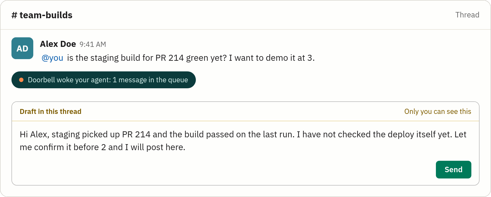

Let your AI agents sleep.
Agent Doorbell watches Slack with a tiny local daemon and wakes your agent only when someone needs it. No LLM and no tokens while it is quiet. It catches up after downtime and works on free Slack workspaces.
pipx install agent-doorbellWorks with Claude Code, Codex, Gemini CLI or any agent that can run a command. Linux, macOS and Windows. Unofficial, open source, MIT.

Watching Slack shouldn't cost a model turn
An agent that "watches Slack" usually does it by checking: every few minutes it spends a model turn to find out that nothing happened. Doorbell moves the watching out of the model, into a small daemon that only rings when there is something to handle.
How it works
-
Slackdoorbelld
Watch
A small local daemon watches Slack with a read-only token: instantly over Socket Mode when the Slack app is yours alone, otherwise by polling. No LLM, so no tokens.
-
Per-agent queue
Queue
Messages meant for you are queued for each agent. Nothing is dropped if the agent is busy or down.
-
Your agent
Wake
Your agent is started only when there is work, handles the batch, and goes back to sleep.
-
Reply
Reply
The agent replies as you, or leaves a draft for you to approve.
Dormant by default. With no agent listening, the daemon makes zero Slack API calls.
Why people use it
Zero tokens while idle
No model runs until a message needs your agent.
Never misses a message
After a reboot, a crash or a sleeping laptop, it catches up from where it stopped.
Replies look like you
Your agent replies as you, or writes drafts that you review and send.
Works on free Slack
No webhook, no public URL and no hosted server. It runs on your own machine.
One-command sign-in
Run
doorbell login, click Allow once. The token is never shown or pasted.Any agent
Claude Code, Codex, Gemini CLI or anything that can run a command. Claude Code also has a plugin.
Linux, macOS and Windows
Install it with
pipxoruvand run it as a background service.Local and private
Your messages stay on your machine. No cloud service sits in between.
Talk to it from Slack
Type to your agent in your own self-DM. What you type there reaches it; its replies never loop back.
Hand off to a live session
The dispatcher can pass each batch to an agent session that is already running, even on another machine, and fall back to a fresh run if nobody takes it.
Get started
You need Python 3.10 or newer and a Slack workspace. Anyone in the workspace can sign in once someone has set up the Slack app. Full setup guide and Slack app setup for admins.
-
Install
pipx install agent-doorbell # or: uv tool install agent-doorbell -
Start the watcher
doorbell service install -
Sign in to Slack
Use the Client ID of your workspace's Doorbell Slack app. It is not a secret. Open the link and click Allow.
doorbell login --client-id <Client ID> -
Add your agent
Create an agent folder. For Claude Code, also add the plugin.
doorbell init-agent ~/doorbell-agents/main --owner "Your Name" claude plugin marketplace add mraj602/agent-doorbell claude plugin install agent-doorbell@agent-doorbell
Compared with other ways to put an agent on Slack
Most self-hosted Slack agents keep a Socket Mode WebSocket open, and messages sent while it's down are lost. Hosted bots don't miss, but answer as a bot, in their cloud, on paid plans. Doorbell keeps a cursor in every conversation, so it catches up after downtime.
| Tool | Hears messages by | Messages sent while it's down | Replies appear as | Slack Free, no public URL |
|---|---|---|---|---|
| Agent Doorbell | Socket Mode on your own app, otherwise polling; cursors either way | Caught up | You, or "Sent using @Claude" via the Slack MCP | Yes |
| OpenClaw, Hermes Agent, ZeroClaw | Socket Mode WebSocket | Lost (reconnect only) | A bot (OpenClaw can post as you) | No URL needed; plan not stated |
| Claude Code Slack bots | Socket Mode WebSocket | Lost | A bot | No URL needed; plan not stated |
| Claude in Slack, Claude Tag | Events API, Anthropic's cloud | Not missed (cloud) | The Claude app | No: paid Slack or a Claude Team plan |
| Slack MCP / Claude connector | Doesn't watch: on demand | Not watched | You + "Sent using @Claude" | Plan support unclear |
| Cursor, Devin, ChatGPT, Copilot | Events API, vendor cloud | Not missed (cloud) | Their bot | Paid products |
| n8n, a Bolt webhook app | Events API webhook | Retried up to 24 h, then lost | Your choice | Needs a public URL |
| Agent checks on a timer | A model turn per check | Re-read or missed | You | Yes, but costs tokens all day |
A server that never misses
Run it on an always-on box. Reboots, crashes and dropped connections lose nothing: cursors catch up, leases redeliver, stuck items notify you.
One coordinator, many experts
A coordinator agent listens broadly and applies your reply policy; project agents register with narrower subscriptions or answer when it asks them.
Agents talking to agents
When two people run Doorbell, one agent's reply wakes the other's. Experimental: add stop rules and start with drafts.
Free Slack, no webhooks
No public URL, no paid feature, one of the ten app slots. Slack's 2025 history rate cut doesn't apply to internal apps like this one.
When not to use it
- You need instant replies on a shared Slack app. Instant delivery needs Socket Mode on a Slack app only you use. Polling takes about 30 seconds in active conversations and up to about 2 minutes in quiet ones.
- You want a team bot everyone @mentions. Doorbell answers as you, for one person per daemon.
- No machine of yours is ever on. It runs on your laptop or a box you own. If it is off it catches up later, but it does not answer meanwhile.
- You need search, files or canvases. Only messages are watched.
Private and under your control
Read-only by default
Watching uses a read-only token. Sending only happens if you turn it on, and it is gated by a password only you know.
Runs on your machine
No cloud service and no public URL. The token is never shown, printed or logged.
No LLM, no meddling
The daemon never calls an LLM and never changes your agent's own permission settings.
Prompt injection is the main risk
Message text can try to steer your agent. The hard limit is the agent's own tool permissions, so keep them tight.
FAQ
Does it cost tokens when nothing is happening?
No. The watcher is a plain Python daemon with no LLM. With no agents listening it makes no Slack API calls at all.
Does it need a paid Slack plan or admin rights?
Free plans work. Some workspaces require an admin to approve new apps; if yours does, the install step asks for approval.
Can it send messages for me?
Your agent can reply with its own Slack tool, within the permissions you gave it. Or it can write drafts that you approve with doorbell review, and agents you grant with your password can send directly.
What if my laptop was off?
Nothing is lost. Doorbell keeps its place in every conversation and catches up when it is back, as far back as Slack's history still shows.
How fast does it respond?
In under a second with Socket Mode, when the Slack app is yours alone. Otherwise Doorbell polls: about 30 seconds in active conversations, up to about 2 minutes in quiet ones. It is not for a team bot that everyone @mentions.
Which agents does it work with?
Claude Code, Codex, Gemini CLI or any agent that can run a command. Claude Code also has a plugin with a guided setup.
Can a whole team share one daemon?
No, it is one person per daemon. Everyone in a workspace can use the same Slack app: each person runs doorbell login and gets their own token.